Last Time¶

Midterm Exam
Today¶
- Working with Vector Data
- Symbology
- Classifying Vector Data
- Color
¶
Working with Vector Data¶
Shapefile¶
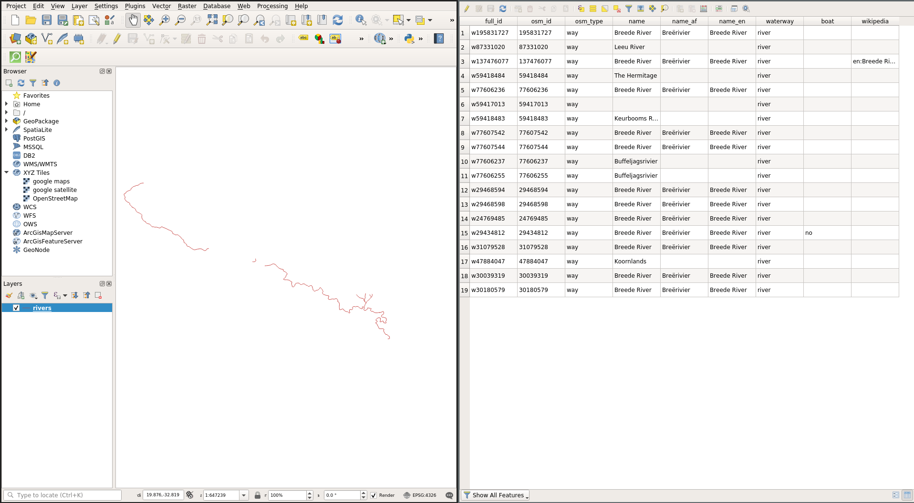
Geopackage¶
- open format
- multiple layers
- different geometries
- can contain vector and raster layers
- different coordinate systems
Geopackage¶
Geopackage: Roads¶

SQLite¶
SQLite¶
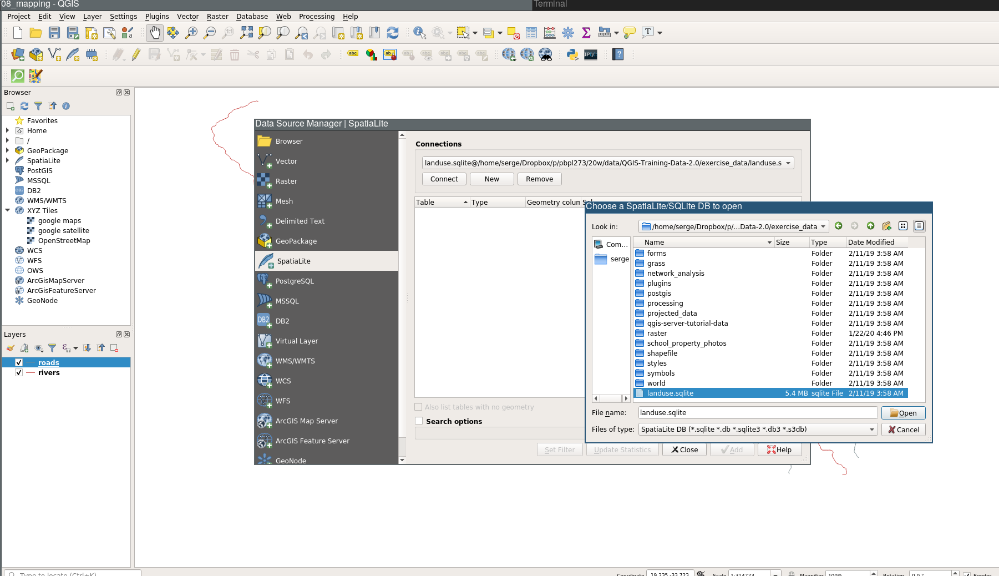
SQLite Connection¶
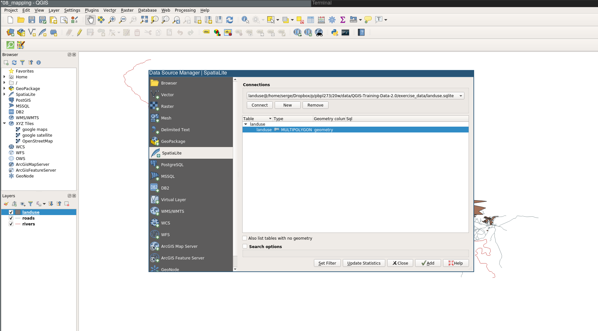
SQLite Land Use¶
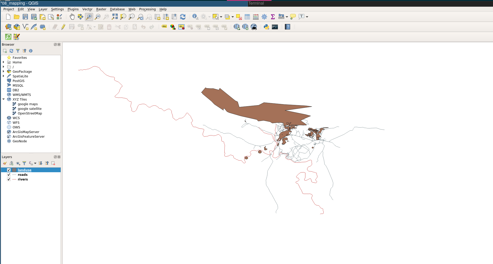
¶
Symbology¶
Color¶

Fill color¶

Symbol Structure¶
Stroke¶

No pen¶

Scale-based visibility¶
Buildings¶
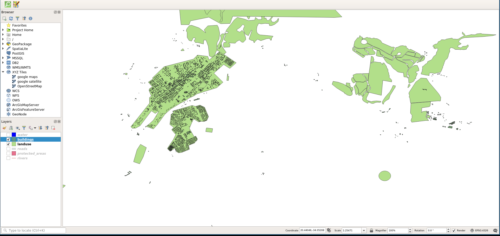
Scale-based visibility¶
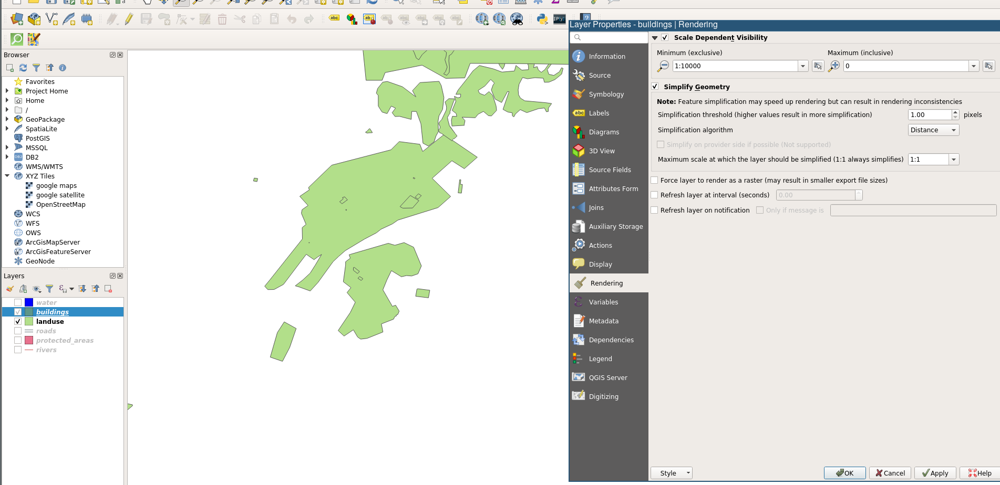
Scale-based visibility¶
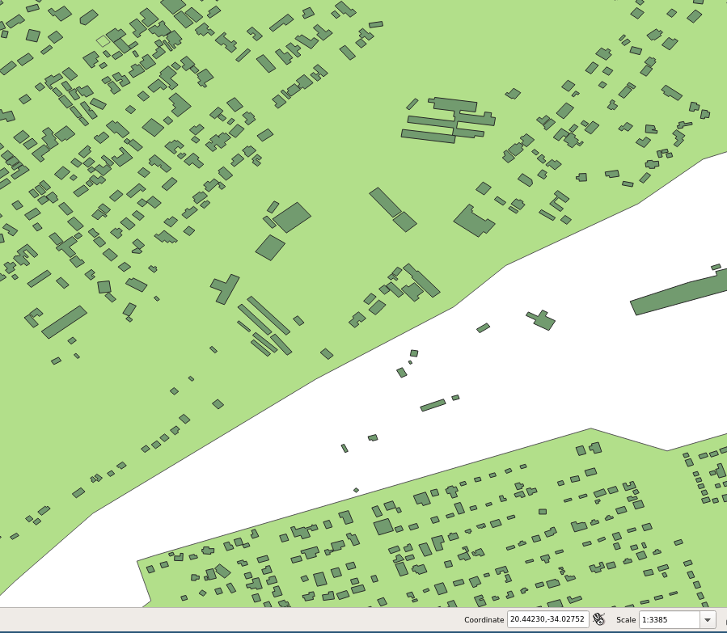
Adding Symbol Layers and Ordering Symbol Levels¶
Roads¶

Add Symbol Layer¶

Order Symbol Levels¶
¶

Ordered Symbol Levels¶

Geometry generator symbology¶
Water: Single Symbol¶

Water: To Centroid¶

Water: To Centroid¶
Water: 2 symbol layers¶
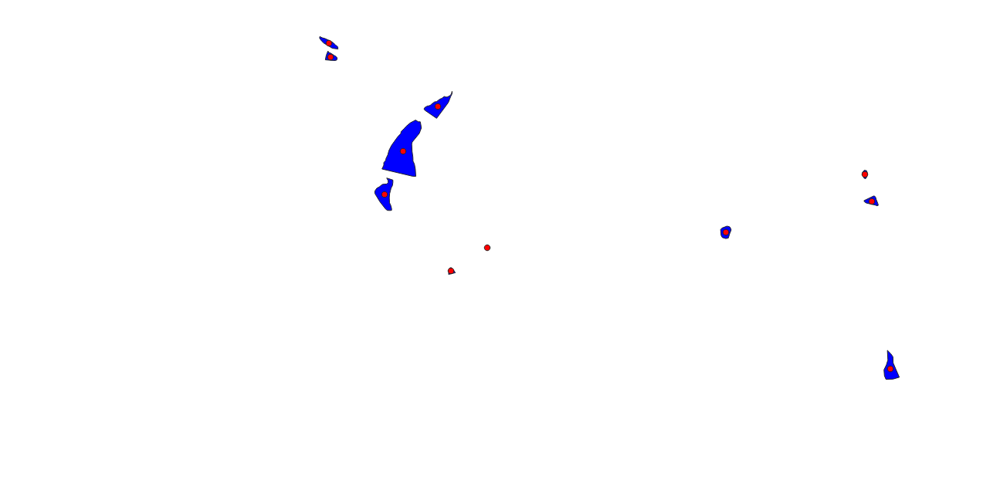
¶
Classifying Vector Data¶
Why Classification?¶
- Summarizing the attribute value distribution
- Representing the spatial distribution of attribute values
Measurement Scales¶
- Nominal: name-based, no order
- Ordinal: arranged in order (ranks)
- Interval: pos, neg, zero values (height above/below sea level)
- Ratio: positive, zero values (distances, degrees Kelvin)
Classifying Nominal Data¶
SCAG Data: COUNTY¶
¶

¶
Ratio/Interval Classification¶
TOTPOP¶
¶
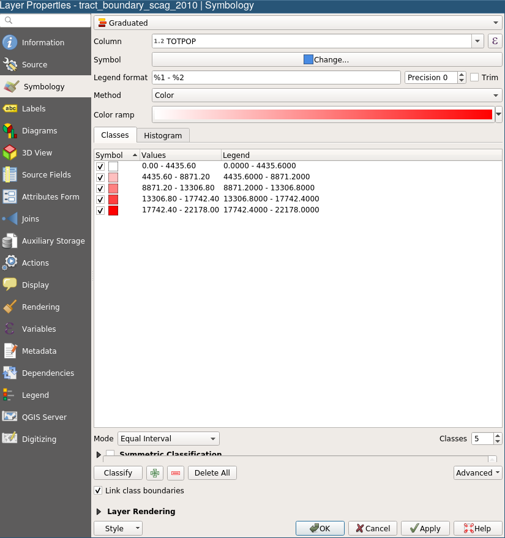
¶

ACRES¶
¶

¶

Extensive and Intensive Variables¶
- AREA and TOTPOP are counts
- Extensive variables
- Geometry size correlated with values
- Choropleths generally not appropriate for extensive variables
Intensive Variables¶
- Percentages, ratios, densities
- Standardized by area (in some sense)
- Geometry size not correlated with values
- Choropleths appropriate for intensive variables
pctHISP (Equal Interval)¶
¶

¶
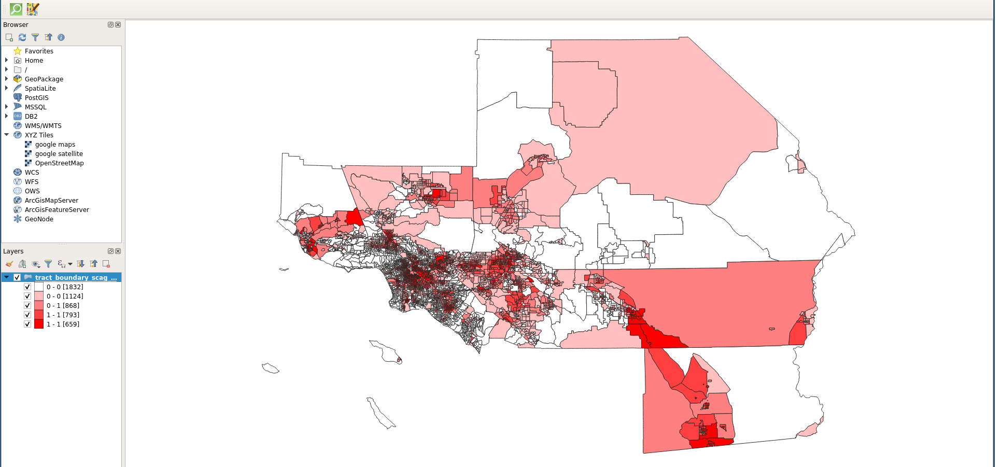
pctHISP (LA Equal Interval)¶
¶
pctHISP (LA Quantiles: 5)¶
¶

¶

pctHISP (LA Jenks: 5)¶
¶

¶

pctHISP (LA Standard Deviation)¶
¶

¶

pctHISP (LA Pretty Breaks)¶
¶
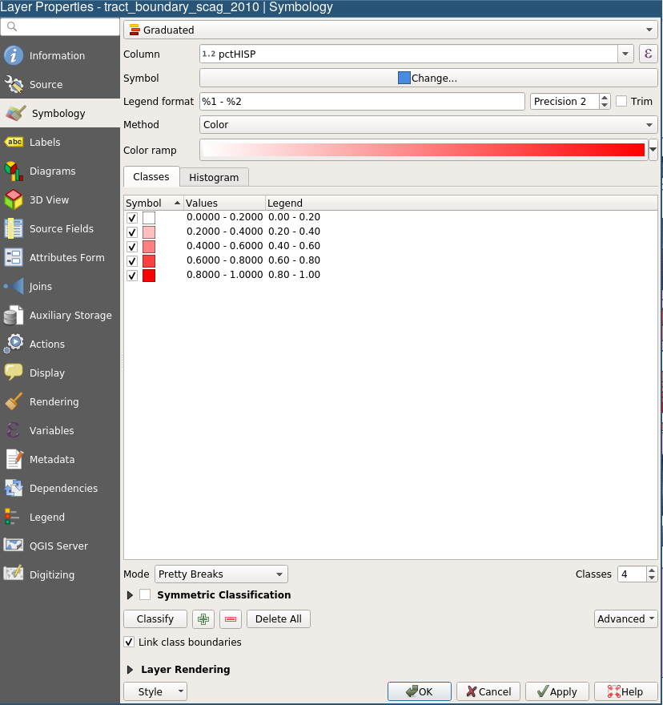
¶

mapclassify¶

¶
Color¶
ColorBrewer¶

ColorBrewer in QGIS¶
Next Up¶
Creating Vector Data
¶

GIS for Public Policy’20 by Sergio Rey is licensed under a Creative Commons Attribution-ShareAlike 4.0 International License.